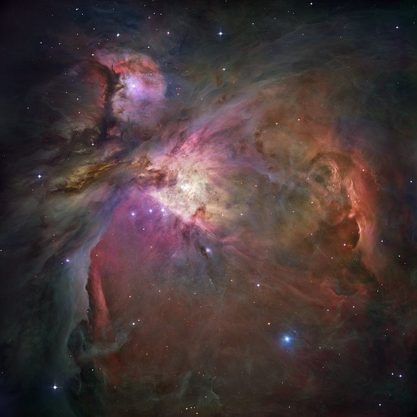
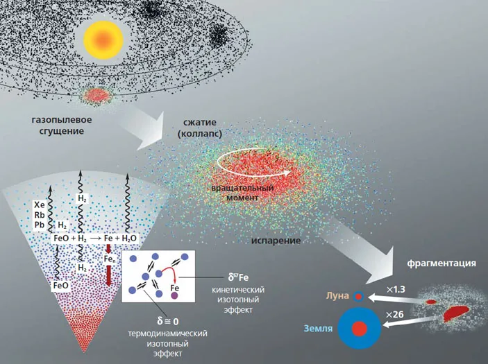
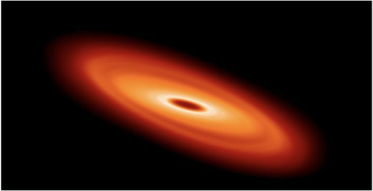
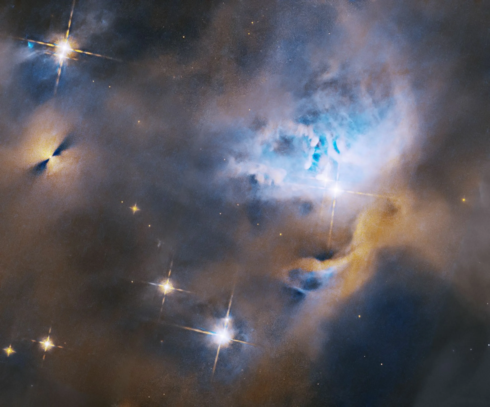

Где рождаются звёзды?
Звёзды не появляются из пустоты. Их рождение начинается внутри огромных облаков газа и пыли, которые называют молекулярными облаками. Они состоят преимущественно из водорода, а также содержат гелий и небольшое количество более тяжёлых элементов.
Такие облака могут простираться на десятки и даже сотни световых лет. Внутри них находятся особенно плотные и холодные области, где под действием гравитации вещество постепенно начинает собираться вместе. Именно в таких местах возникают условия для рождения новых звёзд.
Одним из самых известных мест звездообразования является туманность Ориона. В ней астрономы наблюдают множество молодых звёзд и протозвёзд, окружённых газом и пылью.

Начало рождения — гравитационное сжатие
Внутри молекулярного облака отдельные участки могут становиться плотнее окружающего вещества. Если гравитационное притяжение в такой области становится достаточно сильным, чтобы преодолеть давление газа, она начинает сжиматься под действием собственной массы.
Иногда этому процессу могут способствовать внешние воздействия. Например, ударная волна от взрыва сверхновой или взаимодействие с соседними облаками способны сжать газ и запустить процесс звездообразования.
По мере сжатия вещество становится всё плотнее, а его температура постепенно повышается. Облако может разделяться на несколько отдельных плотных участков, каждый из которых в дальнейшем способен превратиться в самостоятельную звезду.

Протозвезда — будущая звезда
Когда вещество продолжает собираться в центре сжимающегося облака, формируется протозвезда. Так называют молодое образование, которое уже обладает значительной массой, но ещё не стало полноценной звездой.
По мере падения газа на протозвезду выделяется энергия, поэтому её внутренняя температура увеличивается. Вокруг неё часто формируется вращающийся диск из газа и пыли. Он называется протопланетным диском.
Часть вещества из этого диска продолжает поступать на молодую звезду. Другая часть может постепенно объединяться в более крупные тела, из которых в дальнейшем способны сформироваться планеты, астероиды и другие объекты.
На этом этапе протозвезда ещё не получает основную часть своей энергии от устойчивого синтеза водорода в ядре. Она продолжает нагреваться и сжиматься, постепенно приближаясь к следующему этапу своего развития.

Зажигание звезды — начало термоядерных реакций
По мере сжатия протозвезды температура и давление в её центральной области продолжают расти. Когда температура ядра достигает примерно десяти миллионов градусов, создаются условия для начала устойчивых термоядерных реакций.
В ядре начинается термоядерный синтез: ядра водорода объединяются, образуя гелий. При этом небольшая часть массы превращается в энергию, которая постепенно переносится из внутренних областей звезды наружу.
Именно благодаря этим реакциям звезда начинает выделять огромное количество энергии и излучать свет и тепло. В отличие от обычного горения, термоядерный синтез не связан с химической реакцией с кислородом.
Начало устойчивого синтеза водорода означает, что звезда переходит к новому этапу своей жизни. Однако процесс её формирования ещё не заканчивается: излучение и потоки частиц постепенно рассеивают окружающий газ и пыль.

Равновесие — звезда начинает свою жизнь
После начала устойчивых термоядерных реакций звезда постепенно достигает гидростатического равновесия. Это состояние, при котором гравитация, стремящаяся сжать звезду, уравновешивается давлением горячего газа и излучения, направленным наружу.
Звезда становится относительно стабильной и переходит на этап, который астрономы называют главной последовательностью. Большую часть своей жизни она проведёт именно на этом этапе.
Наше Солнце тоже находится на главной последовательности. Оно уже существует примерно 4,6 миллиарда лет и продолжает получать энергию благодаря термоядерному синтезу водорода в гелий.
От чего зависит судьба звезды?
Не все звёзды одинаковы. Их дальнейшая эволюция во многом определяется массой, которую они приобрели во время формирования.
Звёзды небольшой массы расходуют своё водородное топливо очень медленно. Поэтому они могут существовать десятки и даже сотни миллиардов лет. Красные карлики относятся именно к этой группе.
Звёзды, подобные Солнцу, после исчерпания водорода в ядре постепенно превращаются в красных гигантов. В дальнейшем они сбрасывают внешние оболочки, а их центральная часть остаётся в виде белого карлика.
Массивные звёзды расходуют своё топливо гораздо быстрее. В конце своей эволюции многие из них взрываются как сверхновые. В зависимости от массы оставшегося ядра после взрыва может образоваться нейтронная звезда или чёрная дыра.
Таким образом, масса, полученная звездой при рождении, во многом определяет её дальнейшую судьбу.
Сколько длится рождение звезды?
Формирование звезды — чрезвычайно долгий процесс. В зависимости от массы будущей звезды и условий в окружающем облаке он может занимать от сотен тысяч до нескольких миллионов лет.
За это время газопылевое облако проходит несколько этапов: сжатие под действием гравитации, образование протозвезды, нагрев ядра и начало устойчивых термоядерных реакций.
Для человека такие промежутки времени практически невозможно представить. Однако по космическим меркам рождение звезды происходит сравнительно быстро — особенно если учитывать, что некоторые звёзды способны существовать миллиарды лет.
Почему изучение рождения звёзд так важно?
Изучение звездообразования помогает учёным понять, как формируются звёздные системы, откуда появляются планеты и каким образом меняются галактики.
Более того, звёзды играют важнейшую роль в химической эволюции Вселенной. В их недрах образуются многие химические элементы, а во время поздних этапов их жизни и взрывов сверхновых часть этих элементов распространяется в космосе.
Из этого вещества впоследствии могут формироваться новые поколения звёзд, планеты и другие космические объекты. Получается, что вещество, из которого сегодня состоит Земля и всё живое на ней, имеет долгую историю, связанную с жизнью звёзд.
Рождение звезды — это не мгновенное событие, а сложный процесс, который связывает газопылевые облака, появление планетных систем и дальнейшую эволюцию Вселенной.
← Вернуться к разделу «Наука о космосе»